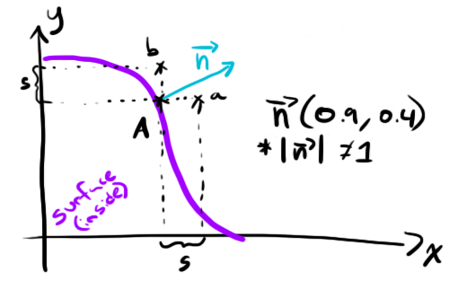

Sphere Tracing 102
September 6th 2015
(Take me back to the Blog section!)
EDIT (7:00PM December 11th 2015) - I've fixed some issues with regards to the normal computation/explanation section with a rewrite and some new images to go along with it.
In this I'll be covering a very basic lighting model and animating the light source position. Let's pick up where we left off at the end of Sphere Tracing 101 with the following shader: https://www.shadertoy.com/view/4tsXzf.
So far, we've only been returning a boolean to indicate whether or not our ray had hit the sphere. In order to figure out how the light is going to interact with the sphere's surface, we're going to need more information about the surface at that point. Enter the surface normal! The normal is a vector "pointing" in the direction that the surface is facing at a specific point in space. In other words, the surface normal is a vector perpendicular to the surface at a given point.
In the (beautifully drawn with my laptop's trackpad, no doubt) image below normals N1, N2 and N3 are the surface normals at points A, B and C respectively.
So, how do we calculate these normals?
For our current universe containing only a sphere, we could use the intersection point's position in 3D space to be interpreted as a vector. This will work because our sphere is centred on the origin at (0,0,0) but will break for any other type of world. We'll need a more general solution to this problem.
The computation used here might not seem obvious from the onset, so we'll describe a solution to the same problem in a 2D space first. In a nutshell, we'll be sampling points close to the point of intersection and taking a weighed average of their distance to the surface to work out a normal approximation. Here we go!
Whaaaaaaaat is this about? The purple shape is our 2D surface and A is the point of intersection at (Ax, Ay) we're trying to find the normal for. We've then taken a unit s and created two new points a and b by shifting A by s along the x and y axes.
Let's call our distance function with those new points as input and see what we get... (I'm making these numbers up, just roll with it)
- dist(a) = 0.9
- dist(b) = 0.4
If we take a vector whose components matches the distances of a and b we get a vector n perpendicular to the surface!
My drawing of vector n isn't to scale, it's about twice as long as it would be "for realsies".
Note that by doing this our vector n isn't normalized (ie. its length isn't 1) so in our computeSurfaceNormal() function we'll have to make sure to apply the normalize() method provided by GLSL before returning the vector. Also note that this is an approximation and that in order to get the most accurate approximation possible the choice of s is key. You'll want an s that's large enough to avoid small arithmetic errors (because your point A won't be exactly on the surface, only less than epsilon distance away from it) and small enough so that the surface behaves like a straight line at your a and b sample points.
The idea is the same for a surface normal in 3D space: take the point of intersection, generate 3 new points by shifting by s along the x, y or z axes, then use their distance from the surface to generate a vector perpendicular to the surface. Easymode :)
Let's write out the corresponding code.
const float S = 0.1;
// const delta vectors for normal calculation
const vec3 deltax = vec3(S ,0, 0);
const vec3 deltay = vec3(0 ,S, 0);
const vec3 deltaz = vec3(0 ,0, S);
[...]
vec3 computeSurfaceNormal(vec3 p){
float d = distanceToNearestSurface(p);
return normalize(vec3(
distanceToNearestSurface(p+deltax)-d,
distanceToNearestSurface(p+deltay)-d,
distanceToNearestSurface(p+deltaz)-d
));
}Now, to test this we'll make a few changes to the world intersection code so it assigns pixel colour based on the normal. Changes are in bold.
const float S = 0.1;
[...]
vec3 intersectWithWorld(vec3 p, vec3 dir){
float dist = 0.0;
for(int i = 0; i < 20; i++){
float nearest = distanceToNearestSurface(p + dir*dist);
if(nearest < 0.01){
return vec3(1.0)+computeSurfaceNormal(p+dir*dist, S))/2.0;
}
dist += nearest;
}
return vec3(0.0);
}
void mainImage( out vec4 fragColor, in vec2 fragCoord )
{
vec2 uv = fragCoord/iResolution.xy;
// generate the ray for this pixel
vec2 camUV = uv*2.0 - vec2(1.0, 1.0);
vec3 nright = normalize(cross(cameraUp, cameraDirection));
vec3 pixel = cameraPosition + cameraDirection + nright*camUV.x*ulen + cameraUp*camUV.y*vlen;
vec3 rayDirection = normalize(pixel - cameraPosition);
vec3 pixelColour = intersectWithWorld(cameraPosition, rayDirection);
fragColor = vec4(pixelColour, 1.0);
}
Awesome, we've got functional normals for our world! In case you're feeling unconvinced that this demonstrates reasonable normals, feel free to take a moment to think about the direction various parts of the sphere are "pointing" towards. If I take the very top of the sphere for instance, the colour there is a very pure green. When assigning the colour to the pixel when we generated this image, the red field mapped to the x axis, the green to the y and blue to the z - so at the very top of the sphere we have a normal that points straight up. Seems correct.
Let's simulate some lights now, shall we? For this we'll use a stripped down version of the Lambertian model. It goes a little something like this...
Intensity = dot(L, N)
L is the vector pointing from the surface to the light and N is the surface normal. Those two are enough to compute how much light gets back to our eye from that point on the surface. Let's try plugging this in to see what it looks like.
vec3 computeLambert(vec3 p, vec3 n, vec3 l){
return vec3(dot(normalize(l-p), n));
}
vec3 intersectWithWorld(vec3 p, vec3 dir){
float dist = 0.0;
for(int i = 0; i < 20; i++){
float nearest = distanceToNearestSurface(p + dir*dist);
if(nearest < 0.01){
vec3 hit = p+dir*dist;
return computeLambert(hit, computeSurfaceNormal(hit, S), vec3(100.0, 30.0, 0.0));
}
dist += nearest;
}
return vec3(0.0);
}This seems a little boring so let's make the light orbit around the sphere.
vec3 intersectWithWorld(vec3 p, vec3 dir){
float dist = 0.0;
for(int i = 0; i < 20; i++){
float nearest = distanceToNearestSurface(p + dir*dist);
if(nearest < 0.01){
vec3 hit = p+dir*dist;
vec3 light = vec3(100.0*sin(iGlobalTime),
30.0*cos(iGlobalTime),
50.0*cos(iGlobalTime));
return computeLambert(hit, computeSurfaceNormal(hit, S), light);
}
dist += nearest;
}
return vec3(0.0);
}And here's what we've got now, with the animation.
The lighting model used here was kept to a bare minimum in terms of complexity and is definitely a far shot from the prettiest one. I may delve into more lighting models in future posts, but for the next few I'll most likely be covering new geometric shapes and textures, so if you're the impatient type I'd recommend you look up the Blinn-Phong model and try to implement that :)
You can find the Sphere Tracing 102 shader here: https://www.shadertoy.com/view/4ljXRh